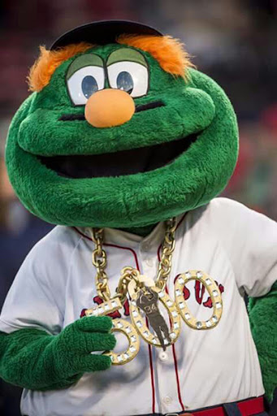

Boston Trivia Quiz

Do you know these fun facts about Boston?
What is Boston named after?
- A. The Boston Terrier dog
- B. The town of Boston, England
- C. Boston Market restaurant chain
What cookie is named after a suburb of Boston?
- A. Fig Newton
- B. Lorna Doone
- C. Snickerdoodle
Boston built America's first subway in what year?
Who is in this photo?

- A. The cookie monster
- B. Wally the green monster
- C. David Ortiz
Finished!
See answer key